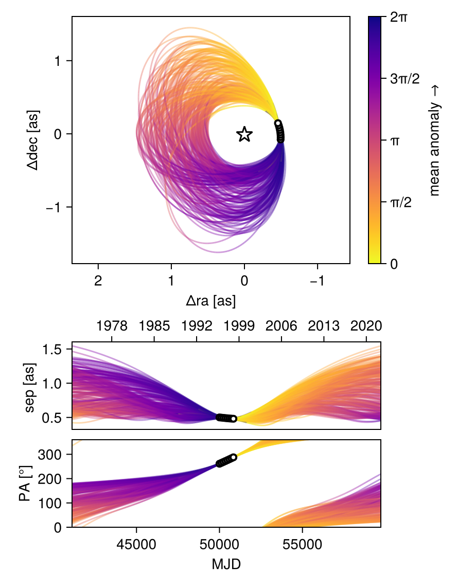
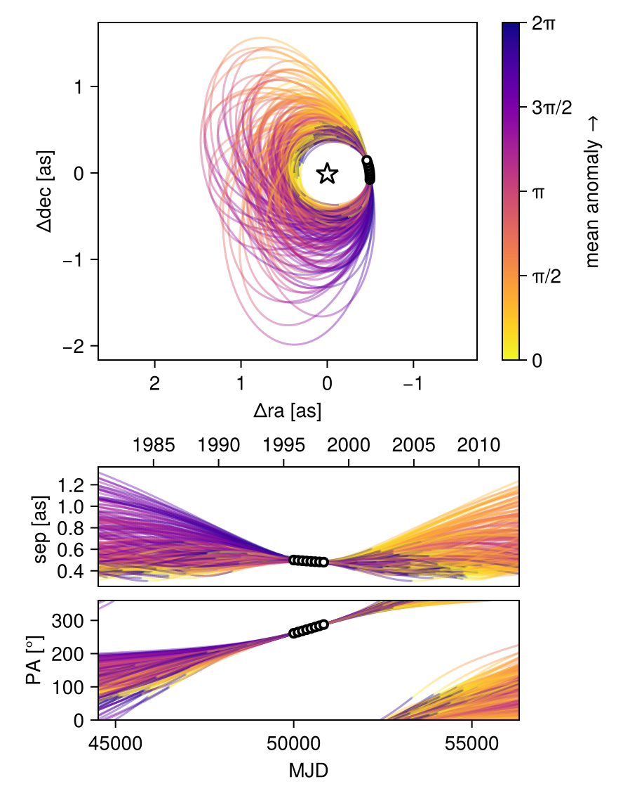
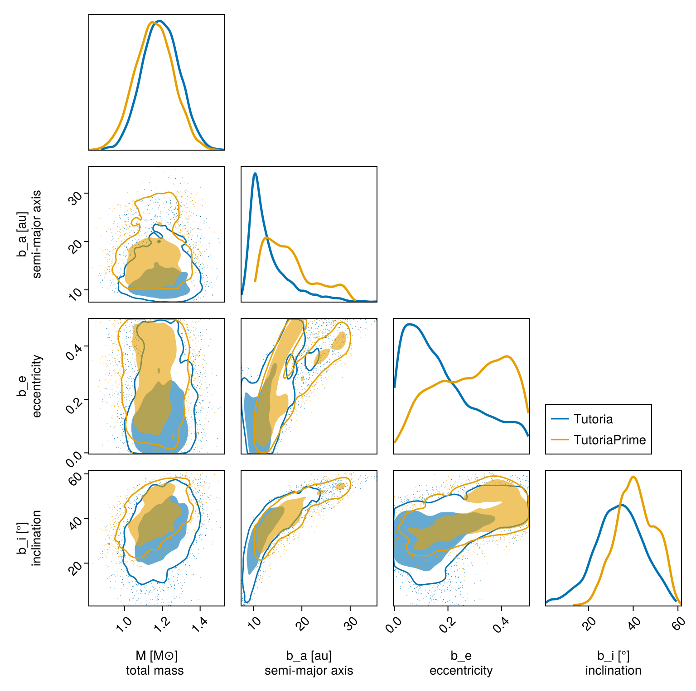

Observable-Based Priors
This tutorial shows how to fit an orbit to relative astrometry using the observable-based priors ofO'Neil et al. 2019. Please cite that paper if you use this functionality.
We will fit the same astrometry as in the previous tutorial, and just change our priors.
using Octofitter
using CairoMakie
using PairPlots
using Distributions
astrom_like = PlanetRelAstromLikelihood(
(epoch = 50000, ra = -494.4, dec = -76.7, σ_ra = 12.6, σ_dec = 12.6, cor= 0.2),
(epoch = 50120, ra = -495.0, dec = -44.9, σ_ra = 10.4, σ_dec = 10.4, cor= 0.5),
(epoch = 50240, ra = -493.7, dec = -12.9, σ_ra = 9.9, σ_dec = 9.9, cor= 0.1),
(epoch = 50360, ra = -490.4, dec = 19.1, σ_ra = 8.7, σ_dec = 8.7, cor= -0.8),
(epoch = 50480, ra = -485.2, dec = 51.0, σ_ra = 8.0, σ_dec = 8.0, cor= 0.3),
(epoch = 50600, ra = -478.1, dec = 82.8, σ_ra = 6.9, σ_dec = 6.9, cor= -0.0),
(epoch = 50720, ra = -469.1, dec = 114.3, σ_ra = 5.8, σ_dec = 5.8, cor= 0.1),
(epoch = 50840, ra = -458.3, dec = 145.3, σ_ra = 4.2, σ_dec = 4.2, cor= -0.2),
)
@planet b Visual{KepOrbit} begin
e ~ Uniform(0.0, 0.5)
i ~ Sine()
ω ~ UniformCircular()
Ω ~ UniformCircular()
# Results will be sensitive to the prior on period
P ~ LogUniform(0.1, 150) # Period, years
a = ∛(system.M * b.P^2)
θ ~ UniformCircular()
tp = θ_at_epoch_to_tperi(system,b,50420)
end astrom_like ObsPriorAstromONeil2019(astrom_like)
@system TutoriaPrime begin
M ~ truncated(Normal(1.2, 0.1), lower=0)
plx ~ truncated(Normal(50.0, 0.02), lower=0)
end b
model = Octofitter.LogDensityModel(TutoriaPrime)LogDensityModel for System TutoriaPrime of dimension 11 and 12 epochs with fields .ℓπcallback and .∇ℓπcallback
Now run the fit:
using Random
Random.seed!(0)
results_obspri = octofit(model,iterations=5000,)Chains MCMC chain (5000×29×1 Array{Float64, 3}):
Iterations = 1:1:5000
Number of chains = 1
Samples per chain = 5000
Wall duration = 20.67 seconds
Compute duration = 20.67 seconds
parameters = M, plx, b_e, b_i, b_ωy, b_ωx, b_Ωy, b_Ωx, b_P, b_θy, b_θx, b_ω, b_Ω, b_a, b_θ, b_tp
internals = n_steps, is_accept, acceptance_rate, hamiltonian_energy, hamiltonian_energy_error, max_hamiltonian_energy_error, tree_depth, numerical_error, step_size, nom_step_size, is_adapt, loglike, logpost, tree_depth, numerical_error
Summary Statistics
parameters mean std mcse ess_bulk ess_tail ⋯
Symbol Float64 Float64 Float64 Float64 Float64 Fl ⋯
M 1.1573 0.1001 0.0023 1941.1108 2561.1059 1 ⋯
plx 49.9994 0.0200 0.0003 5193.0020 2649.9367 1 ⋯
b_e 0.2854 0.1324 0.0045 748.3112 623.8680 1 ⋯
b_i 0.7147 0.1492 0.0114 186.2312 1104.7750 1 ⋯
b_ωy 0.2693 0.6669 0.1547 20.6124 135.8191 1 ⋯
b_ωx 0.2207 0.6767 0.1522 22.3788 140.6987 1 ⋯
b_Ωy -0.1986 0.6793 0.1459 24.2542 116.7504 1 ⋯
b_Ωx -0.2987 0.6539 0.1638 18.7020 73.4009 1 ⋯
b_P 69.5840 30.3034 2.0638 240.2787 520.9333 1 ⋯
b_θy 0.0709 0.0089 0.0002 3013.9146 3061.4591 0 ⋯
b_θx -0.9996 0.1009 0.0018 3134.5577 2790.3321 1 ⋯
b_ω -0.0126 1.5114 0.3439 27.6802 145.8794 1 ⋯
b_Ω -1.3482 1.5156 0.3790 21.6523 143.6398 1 ⋯
b_a 17.4081 5.0115 0.3443 240.7741 485.1970 1 ⋯
b_θ -1.4999 0.0054 0.0001 1846.7779 2871.5022 1 ⋯
b_tp 38480.5708 14400.8314 396.1568 2709.4120 947.3592 1 ⋯
2 columns omitted
Quantiles
parameters 2.5% 25.0% 50.0% 75.0% 97.5%
Symbol Float64 Float64 Float64 Float64 Float64
M 0.9628 1.0884 1.1566 1.2258 1.3513
plx 49.9598 49.9860 49.9998 50.0126 50.0393
b_e 0.0426 0.1758 0.2980 0.4004 0.4888
b_i 0.4222 0.6115 0.7104 0.8282 0.9808
b_ωy -1.0532 -0.1246 0.2297 0.9173 1.1358
b_ωx -1.0790 -0.1285 0.2308 0.8756 1.1329
b_Ωy -1.0972 -0.8806 -0.1575 0.1336 1.0558
b_Ωx -1.1346 -0.9094 -0.3242 0.2246 1.0483
b_P 34.1827 45.4769 61.5905 83.7297 142.9509
b_θy 0.0553 0.0647 0.0705 0.0766 0.0897
b_θx -1.2080 -1.0661 -0.9949 -0.9286 -0.8216
b_ω -3.0217 -1.5783 0.2444 1.2924 1.9237
b_Ω -2.9671 -2.7647 -1.7079 0.2360 1.6029
b_a 10.9804 13.3751 16.3914 19.9828 28.7207
b_θ -1.5103 -1.5037 -1.4999 -1.4962 -1.4896
b_tp 1863.8324 29296.1951 49201.5482 50202.2302 50401.2362
octoplot(model, results_obspri)
Compare this with the previous fit using uniform priors:
octoplot(model, results_unif_pri)
We can compare the results in a corner plot:
octocorner(model,results_unif_pri,results_obspri,small=true)